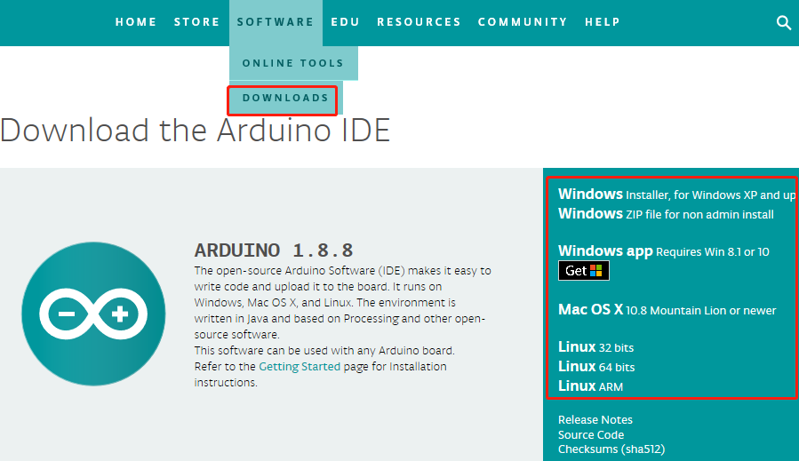
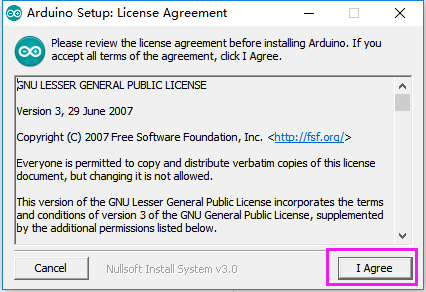
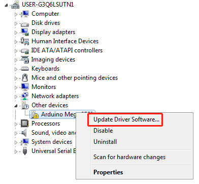
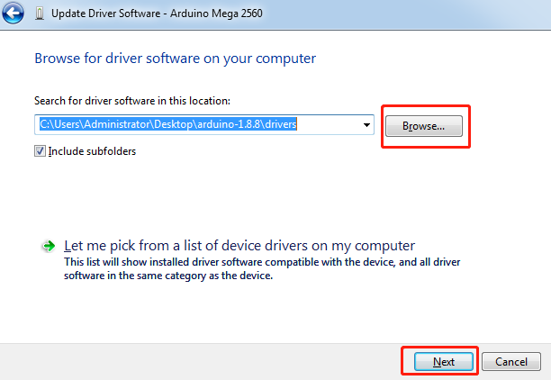
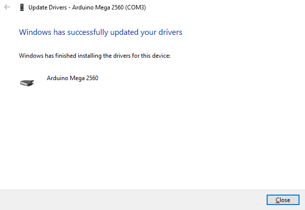
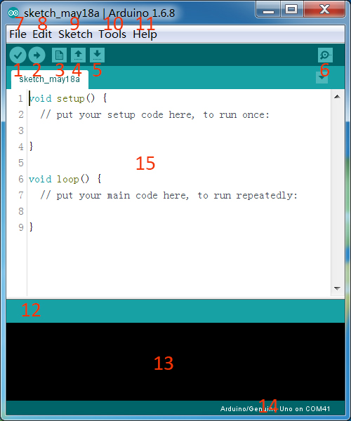

1.1 Arduino IDE¶
Description¶
Arduino is an open source platform with simple software and hardware. You can pick it up in short time even if you are a beginner. It provides an integrated development environment (IDE) for code compiling, compatible with multiple control boards. So you can just download the Arduino IDE, upload the sketches (i.e. the code files) to the board, and then you can see relative experimental phenomena. For more information, refer to http://www.arduino.cc.
Install Arduino IDE¶
Here are the installation steps on the windows system.
For other systems, please refer to: Install Arduinio IDE in different and FAQ.pdf
Install Arduinio IDE in different and FAQ.pdf
The code in this kit is written based on Arduino, so you need to install the IDE first. Skip it if you have done this. Now go to arduino.cc and click SOFTWARE -> DOWNLOADs. On the page, check the software list on the right side.
Find the one that suits your operation system and click to download. There are two versions of Arduino for Windows: Installer or ZIP file. You’re recommended to download the former.
For Installer File¶
Step 1: Find the .exe file just downloaded.

Step 2: Double click the file and a window will pop up as below. Click I Agree.
Step 3: Click Next.

Step 4: Select the path to install. By default, it’s set in the C disk. You can click Browse and choose other paths. Click OK. Then click Install.

Step 5: Meanwhile, it will prompts install the needed drivers, please select the ‘Always trust software from “Arduino LLC” ’. After the installation is done, click Close.
Note
The new IDE may prompt errors when you’re compiling code under Windows XP. So if your computer is running on XP, you’re suggested to install Arduino 1.0.5 or 1.0.6. Also you can upgrade your computer.
For ZIP File¶
If you download the zip file before, when you connect the MCU to the computer, it may not be recognized. Then you need to install the driver manually. Take the following steps.
Step 1: Plug in the board to the computer with a 5V USB cable. After a while, a prompt message of failed installation will appear.
Step 2: Go to the Device Manager. You will find under other devices, Arduino Mega 2560 with an exclamation mark appear, which means the computer did not recognize the board.

Step 3: Right click on Arduino Mega 2560 and select Update Driver Software.
Step 4: Choose the second option, Browse my computer for Driver software.

Step 5: A window pops up then. Click Browse. Then go to the folder where you just extracted the file. Go to the drivers folder and click OK -> Next.
Step 6: Select ‘Always trust software from “Arduino LLC” ‘ then click Install.

It may need a sec. Then the system prompts you the driver has been installed successfully. So the computer can recognize the board now. Click Close.
Open the Arduino Software (IDE)¶
Double-click the Arduino icon (arduino.exe) created by the installation process.

Then the Arduino IDE will appear. Let’s check details of the software.
1. Verify: Compile your code. Any syntax problem will be prompted with errors.
2. Upload: Upload the code to your board. When you click the button, the RX and TX LEDs on the board will flicker fast and won’t stop until the upload is done.
New: Create a new code editing window.
Open: Open an .ino sketch.
Save: Save the sketch.
6. Serial Monitor: Click the button and a window will appear. It receives the data sent from your control board. It is very useful for debugging.
7. File: Click the menu and a drop-down list will appear, including file creating, opening, saving, closing, some parameter configuring, etc.
8. Edit: Click the menu. On the drop-down list, there are some editing operations like Cut, Copy, Paste, Find, and so on, with their corresponding shortcuts.
9. Sketch: Includes operations like Verify, Upload, Add files, etc. More important function is Include Library – where you can add libraries.
10. Tool: Includes some tools – the most frequently used Board (the board you use) and Port (the port your board is at). Every time you want to upload the code, you need to select or check them.
11. Help: If you’re a beginner, you may check the options under the menu and get the help you need, including operations in IDE, introduction information, troubleshooting, code explanation, etc.
12. In this message area, no matter when you compile or upload, the summary message will always appear.
13. Detailed messages during compile and upload. For example, the file used lies in which path, the details of error prompts.
14. Board and Port: Here you can preview the board and port selected for code upload. You can select them again by Tools -> Board / Port if any is incorrect.
The editing area of the IDE. You can write code here.